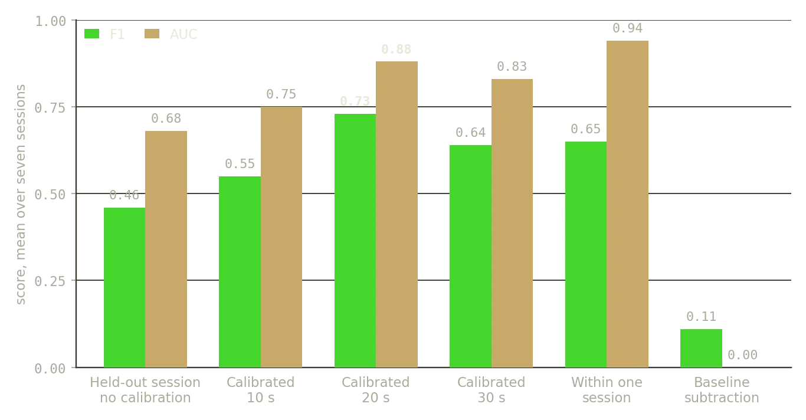
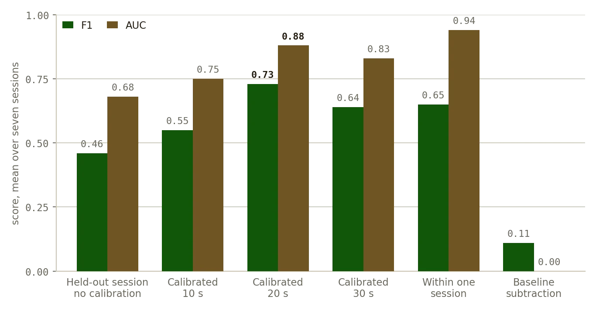
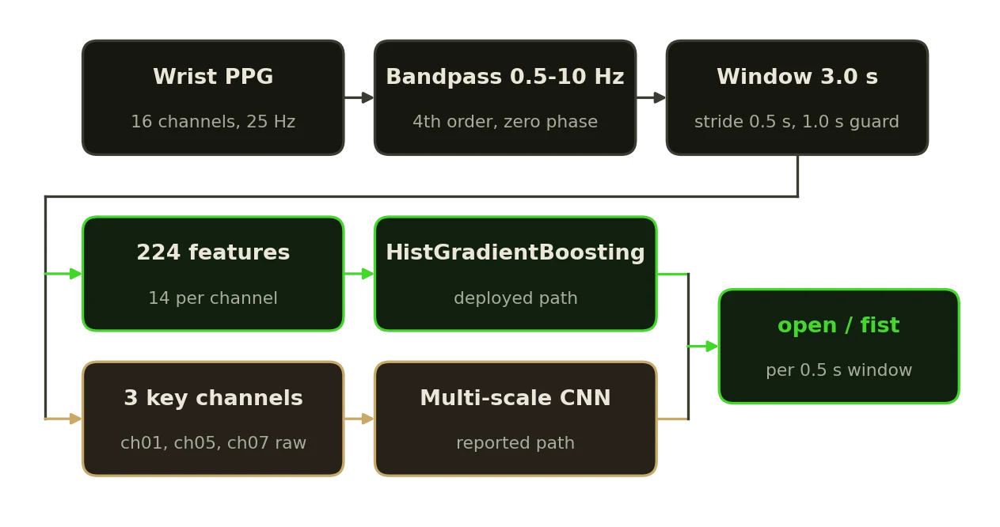
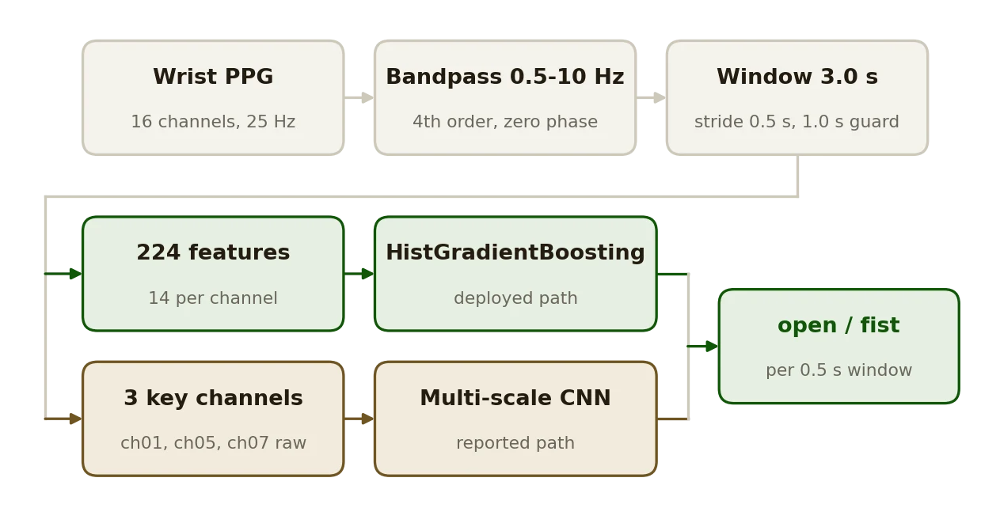
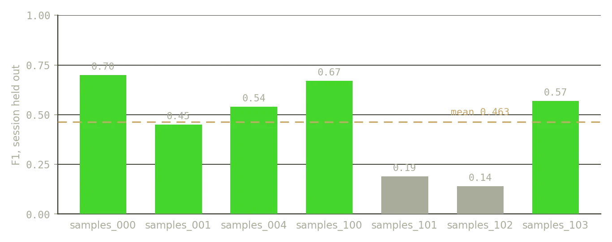
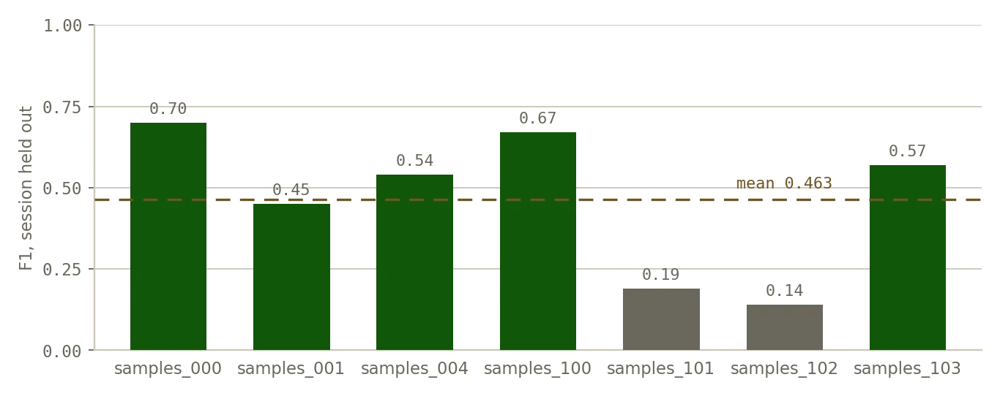

Research · 2025
PPG Fist Classifier
Open hand or fist, from wrist PPG alone, with an evaluation ladder that says what the number is worth.
AIPPGPython


What it does
- Detects hand state, open versus fist, from 16-channel smartwatch PPG at 25 Hz, with no IMU and no camera.
- 224 engineered features per window, 14 per channel: time-domain statistics, gradient statistics, band power in three bands and a baseline shift, into a histogram gradient boosting classifier.
- A real-time UDP service holds a rolling 3 s buffer, predicts at the stride rate, and can fit a per-user model from a guided calibration sequence and blend it with the generic model.
Results
- Zero-shot across sessions: F1 0.46. With 20 s of labeled calibration per wearer: F1 0.73. User-dependent, leave-one-session-out: AUC 0.94.
- Two of the seven sessions score below 0.20 F1 when held out; the cause is not settled, and the README says so.
- Every number in the README is asserted by a test against the results file the experiment writes.
Two model paths
- The deployed classifier is gradient boosting over the 224 features, which the real-time service loads.
- The reported experiment also trains a multi-scale CNN on raw windows from the three channels that separate the classes best on their own.
- Recordings are on Google Drive; the deployed model is sent on request by email, or retrained from the recordings.
Facts
- Year
- 2025
- Status
- Public, release v1.0.0
- Stack
- Python, scikit-learn, SciPy; PyTorch for the CNN experiment
- Data
- Seven sessions of 16-channel wrist PPG at 25 Hz
Figures



